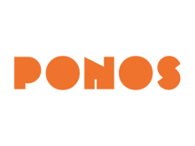
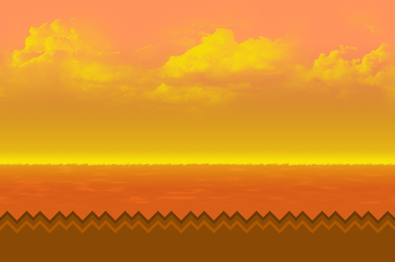
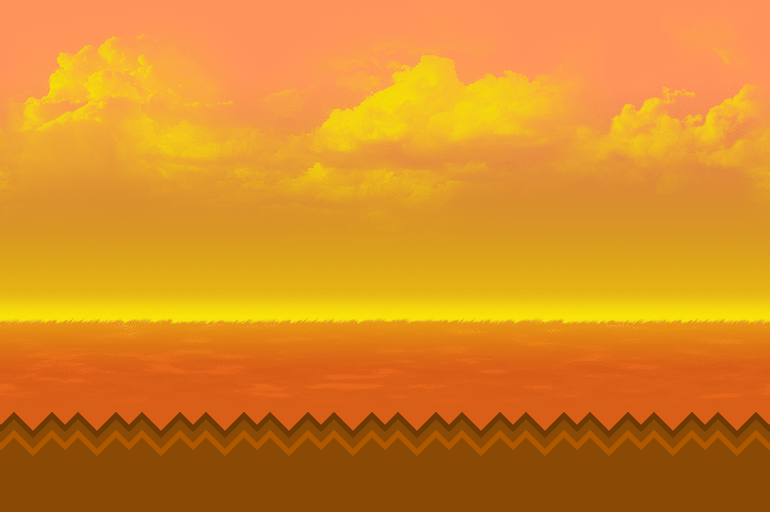
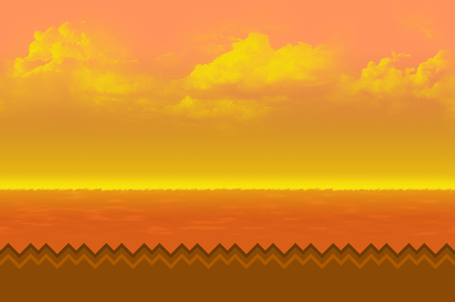

About the Developers
PONOS Corporation is a fairly well-known independent video game company which was formed or started
during the year 1990. It’s headquarters or main office is situated in Kyoto, Japan. The corporation
began as an image processing company but began developing games on mobile platforms later on. PONOS
is famous for creating the well-received tower defense game The Battle Cats, which is the focus of
my website.
Recently, PONOS even became the partner of the Williams F1 team during the 2020 Formula One World
Championship and the 2021 Formula One World Championship.

About the Game (Is it Free-To-Play or Not?)
The Battle Cats, in its core, is a free-to-play tower defense game wherein you send out cats to both
defend your base and destroy the enemy's base. You can obviously spend money to speed up your
progress in the game by buying premium currency and using said currency to draw in the game's gacha
system. However, it is not at all needed since a lot of people (including me) have made so much
progress in the game without purchasing anything using real money. In short, playing the game costs
you absolutely nothing, so why not join the community of over 40 million players.

 
